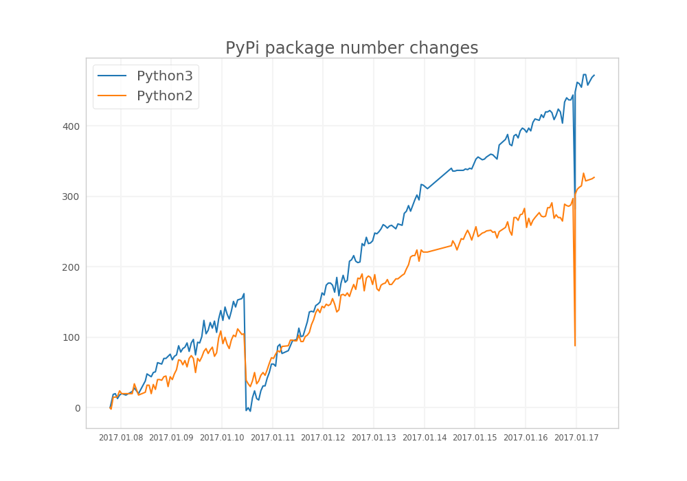

Comparing the number of new Python2 and Python3 packages on PyPi
Posted on Sun 08 January 2017 in Python
I didn't found information about the current activity around different Python versions. So, I decided to periodically collect the number of PyPi packages from the official site to get insight to the current popularity of Python2 vs. Python3.
Here are the results: 
Technical details
The number of packages in PyPi …
Continue reading